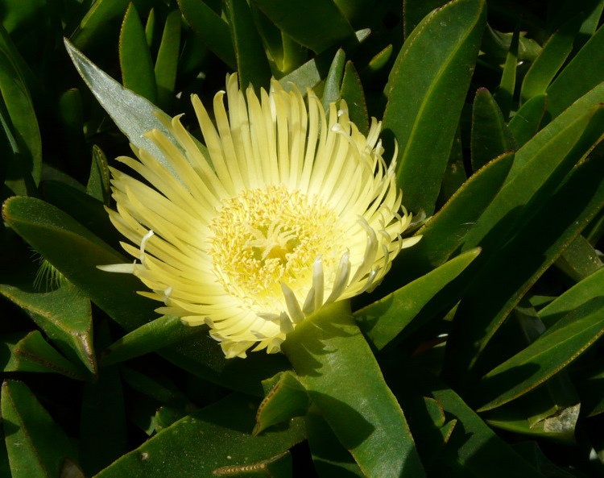

| PHRYGANA | Fauna | Flora |
additions nouveautés |
espèces species |
contact -
info - commentaires phrygana1 (at) gmail.com |
| diversité crétoise -- Cretan diversity | |||||
| Carpobrotus edulis (L.) N. E. BR. var. edulis |
| 61 | Flora | AIZOACEAE | Carpobrotus |
Carpobrotus edulis var. edulis Rethymno 14 avril 2007 |
| Synonyme: Carpobrotus acinaformis (L.) L. BOLUS | |
| fr: Griffe-de-sorcière en: Hottentot fig | |
| Plante vigoureuse rampante | |
| Feuilles: longues, trigones, légèrement courbées et terminées en pointe; couleur variant du vert au vert bleuâtre. | |
| Fleurs: grosses, blanc crème, larges de 60 - 90 mm. Anthères jaunes. | |
| Hauteur: 10 - 25 cm | Type biologique: chaméphyte succulent |
| Floraison: avril mai juin juillet août | |
| Altitudes: 0 - 150 m | |
| Statut en Crète: cultivée, parfois naturalisée -- cultivated, sometimes naturalized | |
| Biotopes en Crète: bords de chemins, jardins, parcs, rochers côtiers. | |
| Distribution: région Méditerranéenne, côtes de l'Europe atlantique | |
| Origine: Afrique du Sud | |
| Espèce héliophile | |
Carpobrotus edulis var. edulis Rethymno 14 avril 2007 |
|
Carpobrotus edulis var. edulis Rethymno 14 avril 2007 |
|
 Carpobrotus edulis var. edulis Rethymno forteresse 30 mars 2010 |
|
Carpobrotus edulis var. edulis Rethymno forteresse 30 mars 2010 |
| 17 septembre 2010 |
| © paul fontaine -- © Phrygana.eu 2007 -- 2013 |